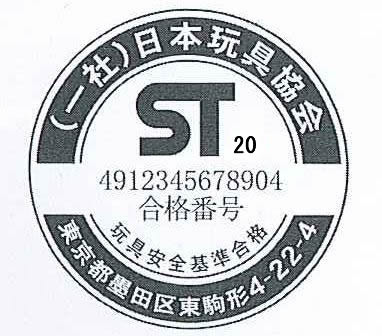

| 【目的】 |
| 第 １ 条 |
一般社団法人 日本玩具協会（以下「協会」という。）が管理・運営する玩具安全基準・玩具安全マーク制度の実施は、この要綱に定めるところによる。 |
【玩具安全基準】 |
| 第 ２ 条 |
協会は、子どもの生命又は身体に対する危害の発生を防止するため、その必要があると認める玩具について、安全に関する判断の基礎となる技術上の基準（以下「玩具安全基準（ＳＴ基準）」という。）を定め、その社会への普及を図るものとする。 |
| ２． |
協会は、玩具に起因する事故や新しく発見された危険要因などを踏まえ、前項の玩具安全基準（ＳＴ基準）を見直し、常にできる限り適切なものとなるよう努めるものとする。 |
| ３． |
玩具安全基準（ＳＴ基準）の改定が行われたときは、協会は、その旨を協会の会員、指定検査機関、協会と玩具安全マーク使用許諾契約（以下「ＳＴマーク使用許諾契約」という。）を締結した事業者（以下「ＳＴマーク使用許諾契約者」という。）、及びその他の関係者に対して速やかに周知するものとする。 |
【玩具安全マーク制度】 |
| 第 ３ 条 |
協会は、ＳＴ基準に適合した玩具の普及を促進し、また、消費者の安全・事故の補償を確保するために、次項の玩具安全マーク制度を実施する。 |
| ２． |
ＳＴマーク制度は、協会が玩具を製造、輸入又は販売する事業者とＳＴマーク使用許諾契約を締結し、当該事業者が製造・販売する玩具について、ＳＴ基準適合検査を受け、これに適合していると認定される場合に、第4条に定める玩具安全マーク（以下「ＳＴマーク」という。）を当該ＳＴ基準適合検査に合格した玩具又はその包装に付して販売することを認め、かつ、当該ＳＴマークを付した玩具の欠陥に起因して事故が発生した場合に備えて、ＳＴマーク使用許諾契約者に対し第13条に定める賠償補償共済制度への加入を義務付け、その賠償原資の充実を図る制度とする。 |
| ３． |
前項のＳＴ基準適合検査は、協会が指定する検査機関（以下「指定検査機関」という。）が行う。 |
| ４． |
指定検査機関が行ったＳＴ基準適合検査結果は、前項の検査合格の日から起算して２年間有効とする。 |
| ５． |
STマークの使用許諾に関する第2項の定めを基本としつつも、次の各号のいずれかに該当する場合には、協会は、当該玩具へのSTマークの使用を認めないことができる。 |
| |
（1）その玩具が、その固有の特性により、ST基準に適合しているだけでは防止することができない潜在的な危険を呈していると協会が判断したとき。
なお、当該危険が専ら当該玩具を製造、輸入又は販売する事業者において措置すべきものであると考えられる場合には、協会は、当該事業者に当該危険を伝え対応を促 すものとする。
（2）青少年の健全な育成の観点から、当該玩具にＳＴマークの使用を認めることが適当でないと協会が判断したとき。 |
【ＳＴマーク】 |
| 第 ４ 条 |
ＳＴマークは下記のとおりとし、ＳＴ基準に適合すると認められた製品又はその包装に表示することとする。
|
|
|
| ２． |
ＳＴマークは黒色とする。
ただし、玩具の本体又はその包装の印刷が単色のときは、当該単色の玩具の本体又はその包装に表示するＳＴマークについては、判読しにくい場合を除き、当該単色と同系統の色を用いることができる。 |
| ３． |
ＳＴマークの大きさは、縦18㎜×横20㎜を基本とする。
なお、ＳＴマークの縦横の長さを、80％以内でそれぞれ同一の比率で縮小することができる。 |
| ４． |
流通事業者等がＳＴマークを認識しやすいよう、バーコードをＳＴマークの近傍に配置することを推奨する。 |
| ５． |
ＳＴマークは、当分の間、ＪＡＮコードを有する玩具のみを対象とすることとし、「玩具安全基準合格」の文字に併記する合格番号（13桁の数字）は、ＪＡＮコードを用いる。 |
| ６． |
標章「ＳＴ」の右横の数字は検査申請年（更新の場合にあっては、更新の検査を申請した年）を表わすものとし、当該検査申請のあった年の西暦年号の下２桁の数字を用いる。
|
| ７． |
玩具を製造・販売する事業者が、第6条３項に定める団体の会員であって、当該団体を経由して協会とＳＴマーク許諾契約を締結する場合にあっては、当該団体があらかじめ協会の承認を得て定める標章をＳＴマークとして、又はＳＴマークに代わる標章として用いることができる。
【参考】 |
|
|
|
 |
日本空気入ビニール
製品工業組合マーク |
|
日本プラスチック玩具
工業協同組合マーク |
|
【ＳＴ基準適合義務】 |
| 第 ５ 条 |
ＳＴマーク使用許諾契約者は、ＳＴマークを表示して販売する玩具について、ＳＴ基準に適合するようにしなければならない。 |
| ２． |
協会は、ＳＴマークの信頼を確保するために必要な措置をとるものとする。 |
【玩具安全マーク使用許諾契約】 |
| 第 ６ 条 |
ＳＴマーク制度を利用しようとする者は、協会とＳＴマーク使用許諾契約を締結しなければならない。 |
| ２． |
ＳＴマーク使用許諾契約書は、別紙( PDF ※印刷してご使用の場合はA3となります)による。 PDF ※印刷してご使用の場合はA3となります)による。 |
| ３． |
下表の団体に所属する者は、当該団体を経由して協会とＳＴマーク使用許諾契約を締結することができる。
| 名 称 |
所 在 地 |
|
東京玩具製問協同組合 |
〒130-8611
東京都墨田区東駒形4-22-4 |
Ｔ |
日本プラスチック玩具工業協同組合 |
〒103-0004
東京都中央区東日本橋2-24-7
東京プラスチック会館5階 |
Ｐ |
日本空気入ビニール製品工業組合 |
〒103-0004
東京都中央区東日本橋2-24-7
東京プラスチック会館2階 |
Ｖ |
日本プラモデル工業協同組合 |
〒111-0051
東京都台東区蔵前4-20-12 |
Ｊ |
大阪玩具事業協同組合
(一社)日本玩具協会大阪支部 |
〒537-0013
大阪府大阪市東成区大今里南1-2-11 O.Tビル8階 |
Ｂ |
東京玩具人形協同組合 |
〒111-0053
東京都台東区浅草橋2-28-14 |
Ｄ |
中部玩具人形工業会 |
〒451-0043
愛知県名古屋市西区新道2-15-17 |
Ｃ |
日本バルーン協会 |
〒166-0014
東京都杉並区松の木3-12-11 |
Ｒ |
|
| ４． |
ＳＴマーク使用許諾契約の締結に際しては、「玩具安全マーク使用許諾契約」に加え、「玩具安全許諾契約申込書」（様式一PDF）、「事業概況説明書」（様式二PDF ※印刷してご使用の場合はA3となります ）、「製造物責任補償共済加入申込書」（様式三PDF【新規用】、【更新用】 ）を提出しなければならない。 |
| ５． |
ＳＴマーク使用許諾契約者は、氏名若しくは名称又は住所、法人にあってはその代表者の氏名に変更があったときは、その旨を協会に届け出るものとする。 |
| ６． |
ＳＴマーク使用許諾契約者は、玩具に係る事業を廃止したときは、遅滞なく、その旨を協会に届け出るものとする。 |
| ７． |
ＳＴマーク使用許諾契約者が、玩具に係る事業の全部を譲り渡し、又はＳＴマーク使用許諾契約者について合併若しくは分割（玩具事業の全部を承継させるものに限る。）があったときは、その事業の全部を譲り受けたもの又は合併後存続する法人若しくは合併により設立した法人若しくは分割によりその玩具に係る事業の全部を承継した法人は、そのＳＴマーク使用許諾契約者の地位を承継する。 |
| ８． |
前項の規定によりＳＴマーク使用許諾契約者の地位を承継したものは、遅滞なく、
その旨を協会に届けるものとする。 |
【契約番号】 |
| 第 ７ 条 |
協会はＳＴマーク使用許諾契約毎にアルファベット1字（Ａ、E、K、又はM）と4桁のアラビア数字で構成される契約番号を発行する。 |
| ２． |
第6条3項に規定する団体を経由して契約を締結した場合にあっては、団体毎に指定されたアルファベット1字（第６条第３項の表の右欄）と当該団体が付する受付番号（４桁のアラビア数字）で構成する。 |
【検査機関の割当】 |
| 第 ８ 条 |
協会は、ＳＴマーク使用許諾契約ごとに、当該ＳＴマーク使用許諾契約に係る玩具についてのＳＴ基準適合検査を実施する指定検査機関を指定するものとする。 |
| ２． |
前項の指定は、ＳＴマーク使用許諾契約の契約番号中のアルファベットに対応して下表のとおりとする。
なお、ＳＴマーク使用許諾契約者の間で合併等の事由により、一の使用許諾契約者が複数の契約記号を有することになる場合は、協会が別に指示するところによる。
契約番号中の
アルファベット |
名 称 |
連 絡 先 |
Ａ・Ｅ・Ｍ
Ｄ・Ｋ・Ｔ |
一般財団法人 日本文化用品安全試験所 |
〒130-8611
東京都墨田区東駒形4-22-4 |
Ｂ |
一般財団法人 日本文化用品安全試験所
大阪事業所 |
〒578-0921
大阪府東大阪市水走3-6-14 |
Ｃ・Ｐ・Ｖ
Ｊ |
一般財団法人 化学研究評価機構
高分子試験・評価センター |
〒135-0062
東京都江東区東雲2-11-17 |
Ｒ |
一般財団法人 化学物質評価研究機構
東京事業所 |
〒345-0043
埼玉県北葛飾郡杉戸町下高野1600番 |
|
【検査機関】 |
| 第 ９ 条 |
指定検査機関は、ＳＴ基準適合検査を実施するのに必要な技術的な基礎を確保していなければならない。 |
| ２． |
協会は、前項の技術的基礎を確認するために必要な措置をとるものとする。 |
| ３． |
SＴマーク使用許諾契約者は、指定検査機関にＳＴ基準適合検査を申請するときは、協会が定めるＳＴ基準適合検査手数料を、当該指定検査機関に支払わなければならない。 |
【検査機関の検査】 |
| 第 10 条 |
指定検査機関は、公正に、かつ、ＳＴ基準に適合する方法によりＳＴ基準適合検査を行うものとする。 |
| ２． |
指定検査機関は、ＳＴ基準適合検査に関し、当該検査結果を記載した関係書類を備え、これを保存するものとする。 |
【国内又は海外の検査機関の実施した検査結果の受入れ】 |
| 第 11 条 |
協会は、指定検査機関以外の国内の検査機関又は海外の検査機関を指定して、当該指定機関がＳＴ基準の一部（ＳＴ基準第3部「化学的特性」に限る。）について基準適合検査を行うことを認め、検査の日から１年以内に限り、当該海外検査機関の行う検査の結果を、指定検査機関の検査結果として受入れるものとする。 |
| ２． |
前項の指定は、下記のとおりとする。
|
名 称 |
連 絡 先 |
|
Hong Kong Standards and Testing Center |
10,Dai Wang Street, Taipo Industrial Estate, NT, Hong Kong, China |
|
CMA Industrial Development
Foundations Limited |
Room 1401-3, Yan Hing Center, 9-13 Wong Chuk Yeung Street, Fo Tan, N.T. Hong Kong |
| |
一般財団法人 化学研究評価機構
高分子試験・評価センター 大阪事業所 |
〒577-0065
大阪府東大阪市高井田中1-5-3
東大阪市立産業技術支援センター内
|
| |
Intertek Testing Services Hong Kong Limited |
6/F, Garment Centre, 576 Castle Peak Road, Kowloon, Hong Kong |
| |
SGS Hong Kong Limited |
1/F, On Wui Centre, 25 Lok Yip Road, Fanling, New Territories, Hong Kong |
| |
SGS Thailand Limited |
41/23 Soi Rama III 59, Rama III Road, Chongnonsee, Yannawa, Bangkok
10120 Thailand |
| |
Intertek Vietnam Limited |
5th, 6th and 7th Floor of lobby D, S.O.H.O Biz office Building - 38 Huynh Lan Khanh Street, Ward 02, Tan Binh District, Ho Chi Minh City, Vietnam |
| |
一般財団法人 日本文化用品安全試験所
香港事業所 |
18/F, A-1, Block 1, Tai Ping Industrial Centre, 57 Ting Kok Road, Tai Po, N.T. Hong Kong |
|
| ３． |
指定検査機関は、その実施するＳＴ基準適合検査において、検査の申請者から、第1項の検査機関の実施した検査結果の提出があったときは、当該検査結果に係る検査を省略するものとする。 |
| ４． |
第1項の検査機関の実施した検査結果を指定検査機関に提出する場合にあっては、検査の申請者は、指定検査機関が、当該検査結果をＳＴ基準適合検査のための資料として円滑に事務処理をすることができるよう、必要な注意を払わなければならない。 |
| ５． |
第9条第1項及び第2項並びに第10条の規定は、第1項の検査機関に準用する。 |
【指定検査機関における他の検査の結果の活用（重複検査の回避）】 |
| 第 12 条 |
指定検査機関が食品衛生法に係る検査を実施したときは、当該食品衛生法に係る検査の結果を、ＳＴ基準適合検査であって当該食品衛生法に係る検査と重複するものについての検査結果とすることができる。 |
| ２． |
指定検査機関が行ったST基準第3部「化学的特性」の検査結果は、その全部又は一部を、他の指定検査機関において当該検査に係る玩具についてのＳＴ基準適合検査の結果として使用することができる。 |
| ３． |
「ＳＴ基準適合検査の申請のあった玩具」が「既にＳＴ基準適合検査に合格している他の玩具」とその本体又はその一部が同一であり、適当と認められるときは、当該ＳＴ基準適合検査の申請者の請求により、協会が別に定める区分に従って、「当該他の玩具」のＳＴ基準適合検査の結果（ＳＴ基準第3部「化学的特性」の検査結果に限る。以下、この項及び次項において同じ。）の全部又は一部を「当該検査申請のあった玩具」のＳＴ基準適合検査の結果として使用することができる。 |
| ４． |
「ＳＴ基準適合検査の申請のあった玩具」が「既にＳＴ基準適合検査に合格している他の玩具」とその原材料となる樹脂等が同一であり、適当と認められるときは、協会が別に定める区分に従って、試験検査機関等に材料等登録を行うことにより、「当該他の玩具」のＳＴ基準適合検査の結果の全部又は一部を「当該検査申請のあった玩具」のＳＴ基準適合検査の結果として使用することができる。 |
【共済加入義務】 |
| 第 13 条 |
ＳＴマーク使用許諾契約者は、玩具賠償責任補償共済制度及び玩具製造物責任補償共済制度に加入するものとする。 |
| ２． |
ＳＴマーク使用許諾契約の終了又は解約にあっては、ＳＴマーク使用許諾契約者は、それまでに出荷したSTマークを付した玩具を継続して販売する場合は、当該玩具について製造物責任賠償保険の付保を措置するものとする。 |
| ３． |
玩具賠償責任補償共済制度及び玩具製造物責任補償共済制度に係る約款は、別に定める。 |
【事故処理】 |
| 第 14 条 |
ＳＴマークを付した玩具の欠陥に起因して起きた事故の処理は、ＳＴマーク使用許諾契約者が、協会と連携をとり、これにあたるものとする。 |
| ２． |
協会は、前条の共済制度に係る補償金の支払に関する業務を協会以外の者に委託して実施することができる。
この場合、協会は、当該委託を行った者に「共済業務センター」の名称を使用させるものとする。 |
| ３． |
ＳＴマーク使用許諾契約期間中にＳＴマーク使用許諾契約者が破産したときは、協会は、第13条の賠償補償共済制度に関し、損害賠償請求者に対し保険法（平成20年法律第56号）に基づく保険金の請求等の手続を説明するものとする。 |
【マークの使用許可】 |
| 第 15 条 |
指定検査機関が発行するＳＴ基準適合検査合格の通知をもって、当該検査に係る玩具についてのＳＴマーク使用許諾があったものとする。
ただし、協会が別に指示する場合にあっては、その指示によるものとする。 |
【マーク使用の報告】 |
| 第 16 条 |
ＳＴマーク使用許諾契約者は、年1回、別に定める様式により協会に対し当該使用許諾契約に係るＳＴマークの使用状況を報告しなければならない。 |
【調査】 |
| 第 17 条 |
協会は、社会におけるＳＴマークの使用の実態について調査を行い、必要な措置をとるものとする。 |
【違約金】 |
| 第 18 条 |
ＳＴマークの使用に関し、この制度要綱又はＳＴマーク使用許諾契約に違反するときは、協会はＳＴマーク使用許諾契約者に対し、違約金の支払い請求その他の措置を求めるものとする。 |
| ２． |
前項の違約金等については、ＳＴマーク使用許諾契約でこれを定める。 |
【施行細則】 |
| 第 19 条 |
協会は、この制度要綱を実施するために施行細則を定める。 |
| 第 20 条 |
この制度要綱の改廃及び制度要綱に基づく施行細則の制定及び指定は、理事会が行う。 |
（付則） |
| 第 １ 条 |
この制度要綱は、平成18年4月1日から施行する。
|
| 第 ２ 条 |
玩具安全マーク使用許諾規則（昭和46年7月1日）は、廃止する。
|
| 第 ３ 条 |
この制度要綱の施行前に玩具安全マーク使用許諾規則その他の定めによってした行為又は実施慣行によってした行為であって、この制度要綱に相当の規定があるものは、この制度要綱の相当規定によってしたものとみなす。
|
| 第 ４ 条 |
この制度要綱の制定に伴って調整が必要となる事態が生じたときは、会長がその都度執るべき措置を決定し、事後に理事会の承認を得るものとする。
|
| |
|
| （付則 平成20年1月1日改定） |
| 第 １ 条 |
この第３条第４項の改定（有効期限２年間への改定）は、平成20年1月1日以降にST基準適合検査の申請のあった玩具について適用する。 |
| （付則 平成20年３月27日改定） |
| |
第12条に第２項を追加する改定は、平成20年３月27日から施行する。旧第２項・第３項は、それぞれ第３項・第４項に変更する。 |
| （付則 平成21年４月1日改定） |
| |
この改定（第8条・第11条の改定）は、平成21年4月1日から施行する。 |
| （付則 平成22年5月26日改定） |
| |
この改定（第6条第3項の表の改定）は、平成22年5月26日から施行する。 |
| （付則 平成22年9月27日改定） |
| |
この改定（第11条の改定）は、平成23年1月1日から施行する。 |
| （付則 平成23年4月1日改定） |
| |
この改定（第８条及び第11条の改定）は、平成23年4月1日から施行する。 |
| （付則 平成23年4月6日改定） |
| |
この改定（制度要綱第８条「名称の変更」の改定）は、平成23年4月1日に遡及して適用する。
この改定（制度要綱第８条「連絡先の変更」の改定）は、平成23年5月2日から施行する。 |
| （付則 平成23年4月13日改定） |
| |
この改定（第８条「名称の変更」の改定）は、平成22年4月1日に遡及して適用する。 |
| （付則 平成23年5月18日改定） |
| |
この改定（第６条第３項の表の「所在地」の改定）は、平成23年4月25日に遡及して適用する。
この改定（第６条第３項の表の「当該団体の行の削除」及び第７条の改定）は、平成23年4月１日に遡及して適用する。 |
| （付則 平成23年7月19日改定） |
| |
この改定（第３条の追加修正）は、平成23年7月19日から施行する。 |
| （付則 平成23年11月16日改定） |
| |
この改定（第８条「連絡先の変更」の修正）は、平成23年11月16日から施行する。 |
| （付則 平成24年04月01日改定） |
| |
この改定（第６条第３項の表の「当該団体の名称変更」）は、平成24年2月24日に遡及して適用する。
この改定（第８条及び第11条の修正）は、平成24年4月1日から施行する |
| （付則 平成24年5月30日改定） |
| |
この改定（第11条の修正）は、平成24年7月1日から施行する。
|
| （付則 平成24年12月26日改定） |
| |
この改定（第６条第３項の表の「団体所在地」の改定）は、平成24年11月27日に遡及して適用する。 |
| (付則 平成25年1月22日改定） |
| |
この改定（第３条第2項（修正）・第４条第７項（削除）・第13条第2項（新規追加）・第14条第3項（修正））は、平成25年4月1日から施行する。 |
| （付則 平成25年2月5日改定） |
| |
この改定（第６条第３項の表の「団体所在地」の改定）は、平成25年2月1日に遡及して適用する。 |
| （付則 平成25年3月22日改定） |
| |
この改定（第１条・第４条・第６条第3項の表中の団体名称の変更）は、平成25年4月1日から施行する。 |
| （付則 平成25年9月20日改定） |
| |
この改定（第１1条2項の表中の海外検査機関の連絡先の変更）は、平成25年8月21日から施行する。 |
| （付則 平成26年1月24日改定） |
| |
この改定（第6条第3項の表中の「東京玩具工業協同組合」に係る欄の削除、第7条第1項への契約番号Mの追加）は、平成26年2月1日より施行。 |
| （付則 平成26年6月27日改定） |
| |
この改定（制度要綱第６条第３項の表の「団体所在地」の改定）は、平成26年6月
27日に適用する。 |
| （付則 平成27年2月1日改定） |
| |
この改定（制度要綱第11条の改定）は、平成27年2月1日から施行する。 |
| （付則 平成29年6月29日改定） |
| |
この改定（第11条第2項の表中の海外検査機関の連絡先の変更）は、平成29年6月22日に遡及して適用する。 |
|
英文版は こちら（PDF）をご覧下さい。 こちら（PDF）をご覧下さい。 |